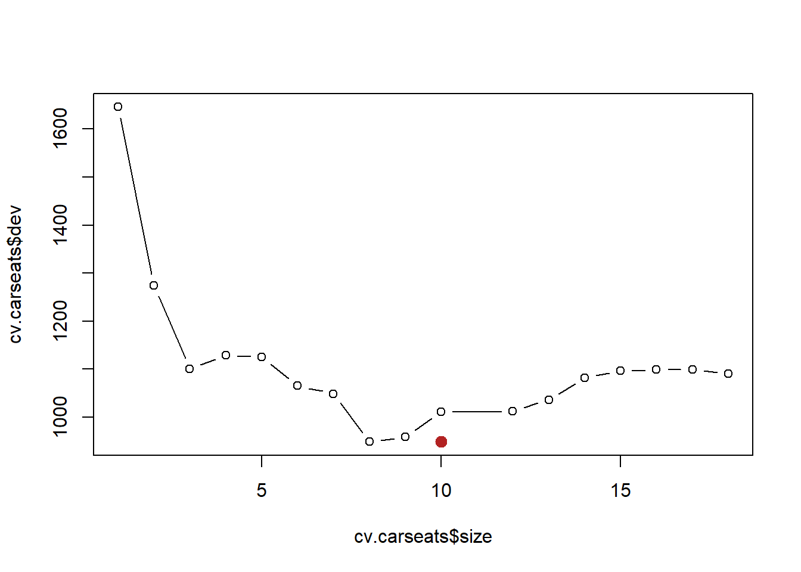
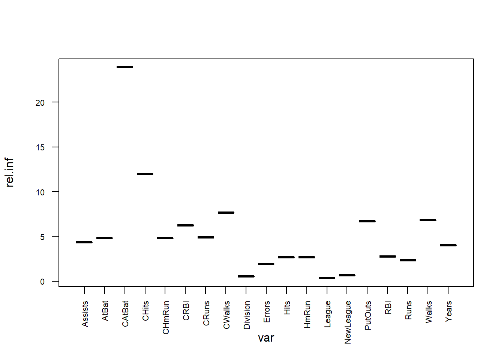

Punto 8
En el laboratorio, se aplicó un árbol de clasificación al conjunto de datos de Carseats después se convirtió a Sales en una variable de respuesta cualitativa. Ahora vamos a tratan de predecir las ventas utilizando árboles de regresión y enfoques relacionados, tratando la respuesta como una variable cuantitativa.
(a) Dividir el conjunto de datos en un conjunto de entrenamiento y un conjunto de pruebas.
library(ISLR)
set.seed(167)
train16 <- sample(1:nrow(Carseats), nrow(Carseats) / 2)
Carseats.train <- Carseats[train16, ]
Carseats.test <- Carseats[-train16, ](b) Ajustar un árbol de regresión al conjunto de entrenamiento. Trazar el árbol e interpretar los resultados. ¿Qué prueba de MSE obtiene?
library(tree)
tree.carseats <- tree(Sales ~ ., data = Carseats.train)
summary(tree.carseats)##
## Regression tree:
## tree(formula = Sales ~ ., data = Carseats.train)
## Variables actually used in tree construction:
## [1] "ShelveLoc" "Price" "Age" "CompPrice" "Population"
## [6] "Education"
## Number of terminal nodes: 18
## Residual mean deviance: 2.323 = 422.7 / 182
## Distribution of residuals:
## Min. 1st Qu. Median Mean 3rd Qu. Max.
## -3.72800 -0.84610 -0.04056 0.00000 0.94970 4.02000plot(tree.carseats, type = "proportional")
text(tree.carseats, splits = TRUE, pretty = 0, cex = 0.5, col = "firebrick")
trea <- predict(tree.carseats, newdata = Carseats.test)
mean((trea - Carseats.test$Sales)^2)## [1] 5.728258El MSE encontrado es de 5.728258
(c) Utilizar la validación cruzada para determinar el nivel óptimo de la complejidad de los árboles. ¿La poda del árbol mejora la prueba de MSE?
set.seed(124)
cv.carseats <- cv.tree(tree.carseats)
plot(cv.carseats$size, cv.carseats$dev, type = "b")
tree.min <- which.min(cv.carseats$dev)
points(tree.min, cv.carseats$dev[tree.min], col = "firebrick", cex = 2, pch = 20)
Para este caso el número de nodos óptimos es de 10.
prune.carseats <- prune.tree(tree.carseats, best = 10)
plot(prune.carseats)
text(prune.carseats, splits = TRUE, pretty = 0, cex = 0.7, col = "firebrick")mse <- predict(prune.carseats, newdata = Carseats.test)
mean((mse - Carseats.test$Sales)^2)## [1] 4.828924El MSE para el árbol con 9 nodos es de 4.828924, aplicando este método el MSE disminuyó.
(d) Utilizar el método de embolsado para analizar estos datos. ¿Qué prueba de MSE se obtiene? Use la función importance() para determinar qué variables son más importantes.
library(randomForest)## Warning: package 'randomForest' was built under R version 3.6.3## randomForest 4.6-14## Type rfNews() to see new features/changes/bug fixes.##
## Attaching package: 'randomForest'## The following object is masked from 'package:ggplot2':
##
## marginbag.carseats <- randomForest(Sales ~ ., data = Carseats.train, mtry = 10, ntree = 500, importance = TRUE)
yhat.bag <- predict(bag.carseats, newdata = Carseats.test)
mean((yhat.bag - Carseats.test$Sales)^2)## [1] 2.424063El MSE es de 2.411247.
importance(bag.carseats)## %IncMSE IncNodePurity
## CompPrice 23.3977292 176.597731
## Income 1.4347349 79.345442
## Advertising 9.9670369 90.483777
## Population 0.7741377 53.374811
## Price 52.2517010 453.830989
## ShelveLoc 51.2583031 494.173738
## Age 18.9224928 181.721583
## Education 2.2039930 42.217272
## Urban 1.5048879 10.535594
## US 2.2370248 7.887095Las dos variables más importantes son Price y ShelveLoc.
(e) Utilizar los bosques al azar para analizar estos datos. ¿Qué MSE de prueba se obtiene? Use la función importance() para determinar qué variables son muy importantes. Describa el efecto de m, el número de variables consideradas en cada división, en la tasa de error obtenido.
rf.carseats <- randomForest(Sales ~ ., data = Carseats.train, mtry = 3, ntree = 500, importance = TRUE)
yhat.rf <- predict(rf.carseats, newdata = Carseats.test)
mean((yhat.rf - Carseats.test$Sales)^2)## [1] 2.862742El MSE es de 2.8458, usando \(m = p^{1/2}\)
importance(rf.carseats)## %IncMSE IncNodePurity
## CompPrice 13.5816356 150.08162
## Income 3.3986133 121.12544
## Advertising 10.9842967 134.04615
## Population -0.5105401 97.85666
## Price 31.0016072 351.58497
## ShelveLoc 37.3844862 373.53686
## Age 16.8896985 214.53891
## Education -0.1775688 65.24262
## Urban 0.9559632 15.83871
## US 2.1564854 24.95120Las variables más importantes son Price, ShelveLoc y Age.
Punto 9
Este problema involucra al conjunto de datos del OJ que es parte del ISLR paquete.
(a) Crear un conjunto de entrenamiento que contenga una muestra aleatoria de 800 observaciones, y un conjunto de pruebas que contiene las observaciones restantes.
set.seed(10)
train <- sample(1:nrow(OJ), 800)
OJ.train <- OJ[train, ]
OJ.test <- OJ[-train, ](b) Ajustar un árbol a los datos de entrenamiento, con la respuesta “Purchase”. y las otras variables como predictores. Utilice la función summary() para producir estadísticas resumidas sobre el árbol, y describir la resultados obtenidos. ¿Cuál es la tasa de error de entrenamiento? ¿Cuántos nodos terminales que tiene el árbol?
library(tree)
tree.oj <- tree(Purchase ~ ., data = OJ.train)
summary(tree.oj)##
## Classification tree:
## tree(formula = Purchase ~ ., data = OJ.train)
## Variables actually used in tree construction:
## [1] "LoyalCH" "DiscMM" "PriceDiff"
## Number of terminal nodes: 7
## Residual mean deviance: 0.7983 = 633 / 793
## Misclassification error rate: 0.1775 = 142 / 800El árbol tiene 8 nodos terminales y tasa de error de clasificación de 0.15
(c) Escriba el nombre del objeto del árbol para obtener una descripción detallada salida de texto. Escoge uno de los nodos terminales, e interpreta la información que se muestra.
tree.oj## node), split, n, deviance, yval, (yprob)
## * denotes terminal node
##
## 1) root 800 1067.000 CH ( 0.61375 0.38625 )
## 2) LoyalCH < 0.48285 290 315.900 MM ( 0.23448 0.76552 )
## 4) LoyalCH < 0.035047 51 9.844 MM ( 0.01961 0.98039 ) *
## 5) LoyalCH > 0.035047 239 283.600 MM ( 0.28033 0.71967 )
## 10) DiscMM < 0.47 220 270.500 MM ( 0.30455 0.69545 ) *
## 11) DiscMM > 0.47 19 0.000 MM ( 0.00000 1.00000 ) *
## 3) LoyalCH > 0.48285 510 466.000 CH ( 0.82941 0.17059 )
## 6) LoyalCH < 0.764572 245 300.200 CH ( 0.69796 0.30204 )
## 12) PriceDiff < 0.145 99 137.000 MM ( 0.47475 0.52525 )
## 24) DiscMM < 0.47 82 112.900 CH ( 0.54878 0.45122 ) *
## 25) DiscMM > 0.47 17 12.320 MM ( 0.11765 0.88235 ) *
## 13) PriceDiff > 0.145 146 123.800 CH ( 0.84932 0.15068 ) *
## 7) LoyalCH > 0.764572 265 103.700 CH ( 0.95094 0.04906 ) *Escogemos el nodo etiquetado 7, que es un nodo terminal debido al asterisco. El criterio de división es LoyalCH >0.764572, el número de observaciones en esa rama es 265 con una desviación de 103.700 y una predicción general para la rama de MM.
(d) Crear un gráfico del árbol e interpretar los resultados.
plot(tree.oj)
text(tree.oj, splits = TRUE, pretty = 0, cex = 0.8, col = "firebrick")Podemos ver que el indicador mas importante de los datos es LoyalCH.
(e) Predecir la respuesta en los datos de la prueba, y producir una confusión matriz que compara las etiquetas de las pruebas con las etiquetas de las pruebas previstas. ¿Cuál es la tasa de error de la prueba?
Matriz de confusión:
tree.pred <- predict(tree.oj, OJ.test, type = "class")
table(tree.pred, OJ.test$Purchase)##
## tree.pred CH MM
## CH 135 20
## MM 27 881 - ((135 + 79) / (135+34+22+79))## [1] 0.2074074La tasa de error de la prueba es de 20.74%
(f) Aplicar la función cv.tree() al conjunto de entrenamiento para determinar el tamaño óptimo del árbol.
cv.oj <- cv.tree(tree.oj, FUN = prune.misclass)
cv.oj## $size
## [1] 7 5 2 1
##
## $dev
## [1] 157 157 161 309
##
## $k
## [1] -Inf 0.000000 4.333333 154.000000
##
## $method
## [1] "misclass"
##
## attr(,"class")
## [1] "prune" "tree.sequence"(g) Elaborar un gráfico con el tamaño del árbol en el eje x y validarlo de forma cruzada tasa de error de clasificación en el eje Y.
plot(cv.oj$size, cv.oj$dev, type = "b", xlab = "Tree size", ylab = "Deviance")(h) ¿Qué tamaño de árbol corresponde a la clasificación validada cruzada más baja tasa de error?
Podemos ver que el árbol de 2 nodos es el árbol más pequeño con la tasa de error de clasificación más baja.
(i) Producir un árbol podado que corresponda al tamaño óptimo del árbol obtenido mediante validación cruzada. Si la validación cruzada no conduce a la selección de un árbol podado, luego crear un árbol podado con cinco nodos terminales.
prune.oj <- prune.misclass(tree.oj, best = 2)
plot(prune.oj)
text(prune.oj,splits = TRUE, pretty = 0, cex = 1.2, col = "firebrick")(j) Comparar las tasas de error de entrenamiento entre los podados y los no podados árboles. ¿Cuál es más alto?
summary(tree.oj)##
## Classification tree:
## tree(formula = Purchase ~ ., data = OJ.train)
## Variables actually used in tree construction:
## [1] "LoyalCH" "DiscMM" "PriceDiff"
## Number of terminal nodes: 7
## Residual mean deviance: 0.7983 = 633 / 793
## Misclassification error rate: 0.1775 = 142 / 800summary(prune.oj)##
## Classification tree:
## snip.tree(tree = tree.oj, nodes = 2:3)
## Variables actually used in tree construction:
## [1] "LoyalCH"
## Number of terminal nodes: 2
## Residual mean deviance: 0.9798 = 781.8 / 798
## Misclassification error rate: 0.1938 = 155 / 800La tasa de error de pruba del árbol no podado es de 0.1938 y para el árbol podado es de 0.1775, para los árboles podados es un poco mayor que los no podados.
(k) Comparar los índices de error de la prueba entre los podados y los no podados árboles. ¿Cuál es más alto?
prune.pred <- predict(prune.oj, OJ.test, type = "class")
table(prune.pred, OJ.test$Purchase)##
## prune.pred CH MM
## CH 136 23
## MM 26 851 - ((136 + 85) / (136+23+26+85))## [1] 0.1814815Para este caso, podar el árbol aumentó el índice de error de prueba en aproximadamente un 18.15%.
Punto 10
Ahora usamos el aumento para predecir el Salary en el conjunto de datos de los Hitters.
(a) Eliminar las observaciones para las que la información de salarios es desconocida, y luego log-transformar los salarios.
library(ISLR)
# Eliminar las observaciones nas para la variable salary
v_nan <- is.na(Hitters$Salary)
new_hitters <- Hitters[-which(v_nan),]
new_hitters$Salary <- log(new_hitters$Salary)(b) Crear un conjunto de entrenamiento que consista en las primeras 200 observaciones, y un conjunto de pruebas que consiste en las observaciones restantes.
#Conjunto de train and test
#Train primeras 200 observaciones
vec_obs <- 1:200
trainS <- new_hitters[vec_obs,]
testS <- new_hitters[-vec_obs,](c) Realizar la potenciación del conjunto de entrenamiento con 1.000 árboles para un rango de valores del parámetro de contracción \(??\).Producir una trama con diferentes valores de contracción en el eje xy el correspondiente conjunto de entrenamiento MSE en el eje y.
library(gbm)## Warning: package 'gbm' was built under R version 3.6.3## Loaded gbm 2.1.5#Valores aleatorios de una dsitribución uniforme en el rango de [0, 0.3]
#tamaño de la muestra aleatori n = 50
set.seed(4567)
values_lambda <- runif(n=50, min=0, max=0.1)
values_lambda <- sort(values_lambda)
error_train <- vector()
error_test <- vector()
for (j in 1:50) {
boost_mod <- gbm(Salary~., distribution = "gaussian", data=trainS, n.trees = 1000,
interaction.depth=4, shrinkage=values_lambda[j])
error_train[j] <- boost_mod$train.error[1000]
pred_salary <- predict(boost_mod, newdata = testS[, -19], n.trees = 1000)
error_test[j] <- mean((pred_salary-testS$Salary)^2)
}(d) Producir un gráfico con diferentes valores de contracción en el eje x y el correspondiente conjunto de pruebas MSE en el eje y.
fac_error <- c(rep("trainS", 50), rep("testS",50))
v_error <- c(error_train, error_test)
v_lambda <- rep(values_lambda, 2)
m_error <- data.frame(v_error, fac_error, v_lambda)
ggplot(data=m_error) +
geom_point(aes(x = v_lambda, y = v_error, color=fac_error)) + labs(x="lambda", y="MSE")El menos MSE con el conjunto de prueba:
min(error_test)## [1] 0.2642566Valor de lambda:
min_lambda <- m_error[m_error$v_error==min(error_test), ](e) Comparar la prueba MSE de potenciación con la prueba MSE que resulta de aplicar dos de los enfoques de regresión que se ven en Capítulos 3 y 6.
Ajustamos el modelo de regresión:
mod_reg <- lm(Salary~., data = trainS)
pred_reg <- predict(mod_reg, newdata = testS[,-19])
test_error_reg <- mean((testS$Salary-pred_reg)^2)
test_error_reg## [1] 0.4917959comp_mse <- c("MSE test Boosting"= 0.2642566,"MSE test regresion"=0.4917959)
comp_mse## MSE test Boosting MSE test regresion
## 0.2642566 0.4917959(f) Cuáles son las variables que parecen ser los predictores más importantes en el modelo de la promoción?
set.seed(2356)
boost_f <- gbm(Salary~., distribution = "gaussian", data=trainS, n.trees = 1000,
interaction.depth=4, shrinkage=0.05411685)
res <- summary(boost_f)plot(res, las=2, cex.axis=0.7)
Los predictores con mayor influencia para para el modelo de Boostes son CatBat y CHits
(g) Ahora aplique el embolsado al equipo de entrenamiento. ¿Qué es el equipo de prueba MSE para este enfoque?
library(randomForest)
set.seed(456789)
mod_bag <- randomForest(Salary~., data=trainS, mtry=19, importance=TRUE)
pred_bag <- predict(mod_bag, newdata = testS[,-19])
erro_bag <- mean((testS$Salary-pred_bag)^2)
mse_c <- c("MSE test Boosting"=0.2642566,"MSE test bagging"= 0.2330524)
mse_c## MSE test Boosting MSE test bagging
## 0.2642566 0.2330524Punto 11
Esta pregunta utiliza el conjunto de datos de Caravan.
(a) Cree un conjunto de entrenamiento que consta de las primeras 1,000 observaciones, y un conjunto de prueba que consta de las observaciones restantes.
set.seed(1)
train19 <- 1:1000
Caravan$Purchase <- ifelse(Caravan$Purchase == "Yes", 1, 0)
Caravan.train <- Caravan[train19, ]
Caravan.test <- Caravan[-train19, ](b) Ajustar un modelo de potenciación al conjunto de entrenamiento con la compra como y las otras variables como predictores. Utiliza 1.000 árboles, y un valor de contracción de 0,01. ¿Lo que los predictores parecen ser el más importante?
set.seed(1)
boost.caravan <- gbm(Purchase ~ ., data = Caravan.train, distribution = "gaussian", n.trees = 1000, shrinkage = 0.01)## Warning in gbm.fit(x = x, y = y, offset = offset, distribution =
## distribution, : variable 50: PVRAAUT has no variation.## Warning in gbm.fit(x = x, y = y, offset = offset, distribution =
## distribution, : variable 71: AVRAAUT has no variation.summary(boost.caravan)## var rel.inf
## PPERSAUT PPERSAUT 13.51824557
## MKOOPKLA MKOOPKLA 10.24062778
## MOPLHOOG MOPLHOOG 7.32689780
## MBERMIDD MBERMIDD 6.35820558
## PBRAND PBRAND 4.98826360
## ABRAND ABRAND 4.54504653
## MGODGE MGODGE 4.26496875
## MINK3045 MINK3045 4.13253907
## PWAPART PWAPART 3.15612877
## MAUT1 MAUT1 2.76929763
## MOSTYPE MOSTYPE 2.56937935
## MAUT2 MAUT2 1.99879666
## MSKA MSKA 1.94618539
## MBERARBG MBERARBG 1.89917331
## PBYSTAND PBYSTAND 1.88591514
## MINKGEM MINKGEM 1.87131472
## MGODOV MGODOV 1.81673309
## MGODPR MGODPR 1.80814745
## MFWEKIND MFWEKIND 1.67884570
## MSKC MSKC 1.65075962
## MBERHOOG MBERHOOG 1.53559951
## MSKB1 MSKB1 1.43339514
## MOPLMIDD MOPLMIDD 1.10617074
## MHHUUR MHHUUR 1.09608784
## MRELGE MRELGE 1.09039794
## MINK7512 MINK7512 1.08772012
## MZFONDS MZFONDS 1.08427551
## MGODRK MGODRK 1.03126657
## MINK4575 MINK4575 1.02492795
## MZPART MZPART 0.98536712
## MRELOV MRELOV 0.80356854
## MFGEKIND MFGEKIND 0.80335689
## MBERARBO MBERARBO 0.60909852
## APERSAUT APERSAUT 0.56707821
## MGEMOMV MGEMOMV 0.55589456
## MOSHOOFD MOSHOOFD 0.55498375
## MAUT0 MAUT0 0.54748481
## PMOTSCO PMOTSCO 0.43362597
## MSKB2 MSKB2 0.43075446
## MSKD MSKD 0.42751490
## MINK123M MINK123M 0.40920707
## MINKM30 MINKM30 0.36996576
## MHKOOP MHKOOP 0.34941518
## MBERBOER MBERBOER 0.28967068
## MFALLEEN MFALLEEN 0.28877552
## MGEMLEEF MGEMLEEF 0.20084195
## MOPLLAAG MOPLLAAG 0.15750616
## MBERZELF MBERZELF 0.11203381
## PLEVEN PLEVEN 0.11030994
## MRELSA MRELSA 0.04500507
## MAANTHUI MAANTHUI 0.03322830
## PWABEDR PWABEDR 0.00000000
## PWALAND PWALAND 0.00000000
## PBESAUT PBESAUT 0.00000000
## PVRAAUT PVRAAUT 0.00000000
## PAANHANG PAANHANG 0.00000000
## PTRACTOR PTRACTOR 0.00000000
## PWERKT PWERKT 0.00000000
## PBROM PBROM 0.00000000
## PPERSONG PPERSONG 0.00000000
## PGEZONG PGEZONG 0.00000000
## PWAOREG PWAOREG 0.00000000
## PZEILPL PZEILPL 0.00000000
## PPLEZIER PPLEZIER 0.00000000
## PFIETS PFIETS 0.00000000
## PINBOED PINBOED 0.00000000
## AWAPART AWAPART 0.00000000
## AWABEDR AWABEDR 0.00000000
## AWALAND AWALAND 0.00000000
## ABESAUT ABESAUT 0.00000000
## AMOTSCO AMOTSCO 0.00000000
## AVRAAUT AVRAAUT 0.00000000
## AAANHANG AAANHANG 0.00000000
## ATRACTOR ATRACTOR 0.00000000
## AWERKT AWERKT 0.00000000
## ABROM ABROM 0.00000000
## ALEVEN ALEVEN 0.00000000
## APERSONG APERSONG 0.00000000
## AGEZONG AGEZONG 0.00000000
## AWAOREG AWAOREG 0.00000000
## AZEILPL AZEILPL 0.00000000
## APLEZIER APLEZIER 0.00000000
## AFIETS AFIETS 0.00000000
## AINBOED AINBOED 0.00000000
## ABYSTAND ABYSTAND 0.00000000Las dos variables más importantes son PPERSAUT y MKOOPKLA.
(c) Utilizar el modelo de potenciación para predecir la respuesta en los datos de la prueba. Predecir que una persona hará una compra si la probabilidad estimada de compra es superior al 20%. Formar una matriz de confusión. ¿Qué fracción de la gente predijo que haría una compra ¿hacen uno de hecho? ¿Cómo se compara esto con los resultados obtenidos al aplicar KNN o regresión logística a estos datos ¿Juego?
probs.test19 <- predict(boost.caravan, Caravan.test, n.trees = 1000, type = "response")
pred.test19 <- ifelse(probs.test19 > 0.2, 1, 0)
table(Caravan.test$Purchase, pred.test19)## pred.test19
## 0 1
## 0 4493 40
## 1 278 11La tasa de predicción correcta es de 21.57%.
logit.caravan <- glm(Purchase ~ ., data = Caravan.train, family = "binomial")## Warning: glm.fit: fitted probabilities numerically 0 or 1 occurredprobs.test22 <- predict(logit.caravan, Caravan.test, type = "response")## Warning in predict.lm(object, newdata, se.fit, scale = 1, type = if (type
## == : prediction from a rank-deficient fit may be misleadingpred.test22 <- ifelse(probs.test19 > 0.2, 1, 0)
table(Caravan.test$Purchase, pred.test22)## pred.test22
## 0 1
## 0 4493 40
## 1 278 11La tasa de predicción correcta usando regresión logística es de 21.57%
Punto 12
Aplicar el aumento, el embolsamiento y los bosques aleatorios a un conjunto de datos de su elección. Asegúrate de que los modelos encajen en un conjunto de entrenamiento y de que evalúen su rendimiento en un equipo de prueba. ¿Cómo de precisos son los resultados comparados a métodos simples como la regresión lineal o logística? ¿Cuál de estos que los enfoques de la investigación dan el mejor resultado?
Se usará el conjunto de datos “Weekly” del paquete estadístico “ISLR” para predecir la variable Direction:
library(gbm)
set.seed(192)
train12 <- sample(nrow(Weekly), nrow(Weekly) / 2)
Weekly$Direction <- ifelse(Weekly$Direction == "Up", 1, 0)
Weekly.train12 <- Weekly[train12, ]
Weekly.test12 <- Weekly[-train12, ]Ajustamos el modelo con regresión lógistica:
Matriz de confusión:
logit.fit12 <- glm(Direction ~ . - Year - Today, data = Weekly.train12, family = "binomial")
logit.probs12 <- predict(logit.fit12, newdata = Weekly.test12, type = "response")
logit.pred12 <- ifelse(logit.probs12 > 0.5, 1, 0)
table(Weekly.test12$Direction, logit.pred12)## logit.pred12
## 0 1
## 0 38 210
## 1 43 254((38+254)/545)*100## [1] 53.57798El porcentaje de predicciones correctas es de 53.58% y la tasa de error de clasificación es de 46.42%.
Ajustamos el modelo usando boosting:
Matriz de confusión:
set.seed(192)
boost.fit12 <- gbm(Direction ~ . - Year - Today, data = Weekly.train12, distribution = "bernoulli", n.trees = 5000)
boost.probs12 <- predict(boost.fit12, newdata = Weekly.test12, n.trees = 5000)
boost.pred12 <- ifelse(boost.probs12 > 0.5, 1, 0)
table(Weekly.test12$Direction, boost.pred12)## boost.pred12
## 0 1
## 0 142 106
## 1 160 137((142+137)/545)*100## [1] 51.19266El porcentaje de predicciones correctas es de 51.193% y la tasa de error de clasificación es de 48.807%.
Ajustamos el modelo usando bagging:
bag.fit12 <- randomForest(Direction ~ . - Year - Today, data = Weekly.train12, mtry = 6)## Warning in randomForest.default(m, y, ...): The response has five or fewer
## unique values. Are you sure you want to do regression?set.seed(326)
bag.probs12 <- predict(bag.fit12, newdata = Weekly.test12)
bag.pred12 <- ifelse(bag.probs12 > 0.5, 1, 0)
table(Weekly.test12$Direction, bag.pred12)## bag.pred12
## 0 1
## 0 90 158
## 1 90 207((85+202)/545)*100## [1] 52.66055El porcentaje de predicciones correctas es de 52.661% y la tasa de error de clasificación es de 47.339%.
Ajustamos el modelo usando bosques:
rf.fit12 <- randomForest(Direction ~ . - Year - Today, data = Weekly.train12, mtry = 2)## Warning in randomForest.default(m, y, ...): The response has five or fewer
## unique values. Are you sure you want to do regression?set.seed(257)
rf.probs12 <- predict(rf.fit12, newdata = Weekly.test12)
rf.pred12 <- ifelse(rf.probs12 > 0.5, 1, 0)
table(Weekly.test12$Direction, rf.pred12)## rf.pred12
## 0 1
## 0 81 167
## 1 85 212((81+212)/545)*100## [1] 53.76147El porcentaje de predicciones correctas es de 53.7615% y la tasa de error de clasificación es de 46.2385%.
Se puede concluir de acuerdo a los modejos de predicción ajustados que para este caso el mejor modelo es ajustado por el método de bosques aleatorios pues tuvo la tasa de error de clasificación más baja.
Punto 7
En el laboratorio, aplicamos bosques aleatorios a los datos de Boston usando mtry=6, ntree=25 y ntree=500. Crear un gráfico que muestre la prueba error resultante de los bosques aleatorios en este conjunto de datos para un rango de valores para mtry y ntree. Puedes modelar tu trazar después de la figura 8.10. Describa los resultados obtenidos.
library(MASS)
library(randomForest)set.seed(6)
train <- sample(1:nrow(Boston), nrow(Boston) / 2)
Boston.train <- Boston[train, -14]
Boston.test <- Boston[-train, -14]
Y.train <- Boston[train, 14]
Y.test <- Boston[-train, 14]
rf.boston1 <- randomForest(Boston.train, y = Y.train, xtest = Boston.test, ytest = Y.test, mtry = ncol(Boston) - 1, ntree = 500)
rf.boston2 <- randomForest(Boston.train, y = Y.train, xtest = Boston.test, ytest = Y.test, mtry = (ncol(Boston) - 1) / 2, ntree = 500)
rf.boston3 <- randomForest(Boston.train, y = Y.train, xtest = Boston.test, ytest = Y.test, mtry = sqrt(ncol(Boston) - 1), ntree = 500)
plot(1:500, rf.boston1$test$mse, col = "#6B81FF", type = "l",xlab = "Number of Trees", ylab = "Test MSE", ylim = c(10, 19))
lines(1:500, rf.boston2$test$mse, col = "#FFCF70", type = "l")
lines(1:500, rf.boston3$test$mse, col = "#38E8D4", type = "l")
legend("topright", c("m = p", "m = p/2", "m = sqrt(p)"), col = c("#6B81FF", "#FFCF70", "#38E8D4"), cex = 1, lty = 1.5)En el gráfico se puede observar que para valores de m<p dismunuye el MSE y para un solo árbol el MSE es muy alto pero a medida que el número de árboles aumenta el MSE disminuye. Además para valores mayores a 100 el MSE no cambia mucho, permanece casi constante.